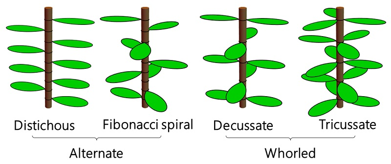
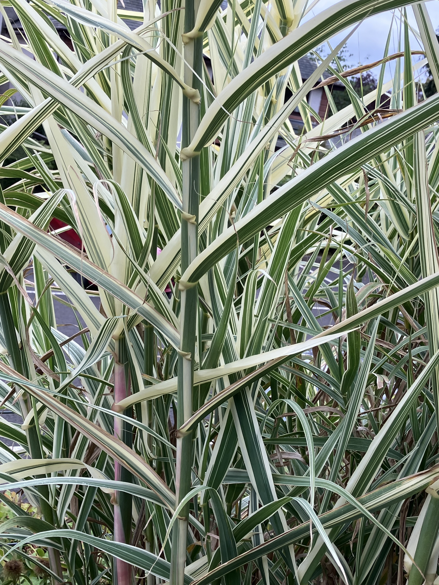
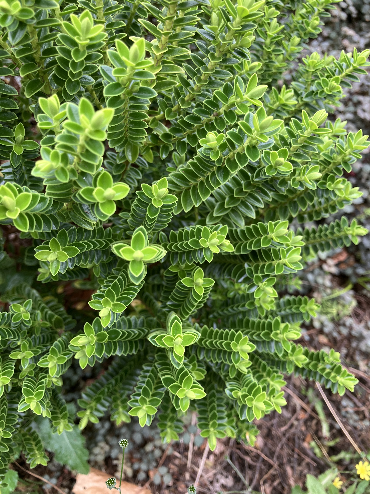

Phyllotaxis (\(\sigma\))
Plants arrange their leaves around a stem in regular patterns. If you look directly down the stem of a plant, you can estimate the angle that the next leaf down is rotated through.
The angle is called the divergence angle and the pattern of leaf arrangement is known as phyllotaxis. Many different plant species share similar phyllotaxis patterns.

When the leaves are on opposite sides of the stem, the divergence angle is \(180^\circ\). This is known as distichous (see image below). Other commonly found angles are \(137.5^\circ\) (Fibonacci spiral), \(90^\circ\) (decussate), or \(60^\circ\) (tricussate).
The plants in the image below have distichous (left) and decussate (right) patterns:


There are many plants in the garden, but just a few phyllotaxis patterns.
Build your own leaf system
You can simulate your own leaf system using the app below. Two things control the pattern: how many leaves grow from each point on the stem (one, a pair, or a whorl of three), and the divergence angle. For a single leaf at a time, that angle is free to be anything. You can drag it to 180° for distichous, or to exactly 137.5°, the golden angle, for the Fibonacci spiral. For pairs and whorls, the angle is fixed by how many leaves share each point: 90° for pairs, 60° for whorls of three, matching the decussate and tricussate patterns.
The app provides three ways to look at the same pattern: from directly above the stem (how you’d actually classify a real plant), the stem’s surface unrolled flat (straight rows reveal how many columns of leaves line up), and a fully 3D view you can rotate yourself.